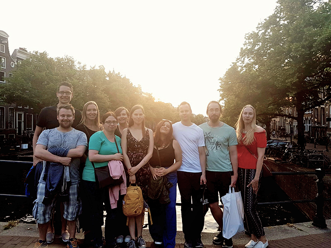

Research highlights and The Cell Fate Team in the media:
21-23 November 2018
Oscar and Rob represented the lab at the Joint Dutch German vascular biology meeting (Amsterdam, the Netherlands) with a poster presentation on “Jagged1-specific shear stress response for Notch signaling in endothelial cells”.
14 November 2018
Thank you to the Cancer Society of Finland for awarding Cecilia and the Cell Fate lab two-year funding for the project “Notch4/14-3-3 interaction in breast cancer and small molecule stabilizers as novel opportunities for breast cancer therapeutics”.
8-9 November 2018
Cecilia and Nicole represented the lab at the International organ-on-chip symposium (Eindhoven, the Netherlands), Cecilia with a lecture on “Nature versus nurture: cellular decisions in complex environments - opportunities for organ-on-a-chip” and Nicole with a poster presentation.
17 October 2018
Congratulations to Rob, Oscar, Marika, Freddy, Janine and Cecilia for the publication: Shear stress induces expression, intracellular reorganization and enhanced Notch activation potential of Jagged1 (Driessen et al., 2018, Integr Biol (Camb)). Thank you Carlijn Bouten for the collaboration!
6 October 2018
Congratulations to Jelle and Cecilia for the publication: MDA-MB-231 breast cancer cells and their CSC population migrate towards low oxygen in a microfluidic gradient device (Sleeboom et al., 2018, Int J Mol Sci). Thank you to Jaap den Toonder for the collaboration!
1 October 2018
Welcome Janine Grolleman, our new PhD student at the TU/e Cell Fate lab.
10 September 2018
Congratulations to Oscar, Nicole and Cecilia for the publication: Microfabricated tuneable and transferable porous PDMS membranes for Organs-on-Chips (Quirós-Solano et al., 2018, Sci Rep). Thank you to the Pasqualina Sarro lab and all other collaborators!
29 August 2018
Results in brief for the European Commission FP7-funded project StressFate, led by Cecilia and professor Carlijn Bouten at TU/e: Damaged heart could benefit from latest research into tissue regeneration (CORDIS, 2018).
14 August 2018
Congratulations to Cecilia for being awarded with the title of Knight, First Class, of the Order of the White Rose of Finland by the President of the Republic of Finland, Sauli Niinistö. The knighthood was awarded in conjunction with the celebration of the 100th Anniversary of Åbo Akademi University.
12 July 2018
Congratulations to Valeriy, Veronica, Cecilia, Adolfo for the publication: Targeting Somatostatin Receptors By Functionalized Mesoporous Silica Nanoparticles - Are We Striking Home? (Paramonov et al., 2018, Nanotheranostics). Thank you to the Jessica Rosenholm lab for collaboration!
11 July 2018
Congratulations to Sebastian and Cecilia for the publication: Notch signaling promotes a HIF2α-driven hypoxic response in multiple tumor cell types (Mutvei et al., 2018, Oncogene). Thank you to the Urban Lendahl lab and all other collaborators!
1 July 2018
Welcome Freddy Suarez Rodriguez, our new research assistant and soon-to-be PhD student at the ÅAU Cell Fate lab.
24-29 June 2018
Cecilia and Oscar for represented the lab at the Gordon Research Conference on Intermediate Filaments: Intermediate Filaments as the Platform to Underpin the "Social Network" of Cells and Tissues (Lucca, Italy). Cecilia gave a lecture on “Vimentin Regulation of Notch Signaling During Vascular Remodeling” and Oscar on “Vimentin and Notch Signalling in the Regulation of Vascular Homeostasis”
20-22 June 2018
Cecilia represented the lab at the Notch-targeting in cancer meeting (Cape Greco, Cyprus).
18 June 2018
Thank you to the Academy of Finland for awarding the Spatiotemporal Control of Cell Functions (SPACE) consortium, including Cecilia and the Cell Fate lab, four-year Academy Project funding.
1 June 2018
Welcome Elenaé Vazquez-Ulloa and William Eccleshall to the ÅAU Cell Fate lab! Elenaé is our new postdoctoral researcher and William a research assistant and soon-to-be PhD student.
25 May 2018
Cecilia interviewed in Turun Sanomat, the leading regional newspaper in Southwest Finland: Turkuun paluu kannatti, rahoitusta alkoi ropista professorille: "Oli hyvä veto tulla takaisin" (Turun Sanomat).
22-25 May 2018
Notch retreat in the Netherlands. ÅAU Notchies thank the TU/e Notchies for their hospitality! 
18 May 2018
Oscar for represented the lab at the International Conference of Tissue-Engineered Heart Valves (Amsterdam, the Netherlands) by giving a lecture on “Cardiovascular-tissue-on-a-chip to study crosstalk between hemodynamics and cell-cell signalling in tissue engineering outcome”.
14 May 2018
Congratulations to Nicole, Oscar and Cecilia for the publication: A biomimetic microfluidic model to study signalling between endothelial and vascular smooth muscle cells under hemodynamic conditions (van Engeland et al., 2018, Lab Chip). Thank you to all collaborators!
23 April 2018
Congratulations to Laura, Oscar and Cecilia for the publication: Spatial patterning of the Notch ligand Dll4 controls endothelial sprouting in vitro (Tiemeijer et al., 2018, Sci Rep). Thank you to the collaborators!
17 April 2018
ÅAU press release on the Loerakker et al. paper on a computational model of mechanosensitive Notch signaling in the arterial wall: Ny modell förutspår hur blodflödet påverkar blodkärl (ÅA, 2018).
2 April 2018
Congratulations to Oscar and Cecilia for the publication: Mechanosensitivity of Jagged-Notch signaling can induce a switch-type behavior in vascular homeostasis (Loerakker et al., 2018, Proc Natl Acad Sci U S A). Thank you to Sandra Loerakker and all other collaborators!
16 March 2018
Congratulations to Jelle and Cecilia for the publication: Metastasis in context: modeling the tumor microenvironment with cancer-on-a-chip approaches (Sleeboom et al., 2018, Dis Model Mech). Thank you to the Jaap den Toonder lab for the collaboration!
8 March 2018
Congratulations to Cecilia for the publication: Mapping of the three-dimensional lymphatic microvasculature in bladder tumours using light-sheet microscopy (Tanaka et al., 2018, BJC). Thank you to the Per Uhlén lab and all other collaborators!
1 March 2018
Welcome Tommaso Ristori, our new postdoctoral researcher at the TU/e Cell Fate lab.
9 February 2018
Cecilia’s interview on Science Bites, a popular science video series produced by ÅAU: ÅAU Science Bites – CAN WE CURE CANCER? (ÅA, Youtube; 2018).
8 January 2017
Welcome Marjaana Parikainen, our new research assistant and soon-to-be PhD student at the ÅAU Cell Fate lab.
5 January 2018
Congratulations to Christian and Cecilia for the publication: Sumoylation of Notch1 represses its target gene expression during cell stress (Antila et al., 2018, Cell Death Differ). Thank you to all the collaborators!